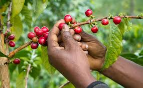

About Us
Nyanyumba Women's Cooperative produces top-notch specialty coffee, sourced from dedicated farmers.
Welcome to Nyanyumba coffee , where passion for coffee meets exceptional taste. Our journey began with a simple love for the perfect cup of coffee. With each bean carefully sourced from renowned coffee-growing regions, we've curated a selection that embodies the rich diversity and flavors of the world's finest coffee.
Join us on this journey through the world of coffee. Whether you're an aficionado seeking new flavors or someone looking to discover the art of coffee,Nyanyumba coffee is your destination for a truly delightful experience."
Our Products


Contact Us
Email: contact@nyanyumbacoffee.com
Phone: +250791899234